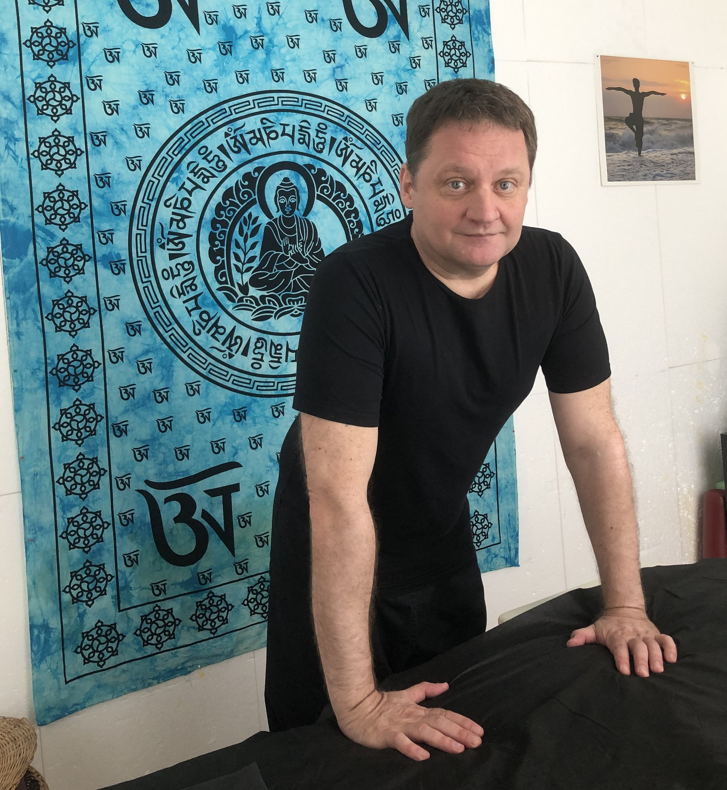

Jenei Zsolt
Masszőr, mozgástanár · Lusta Sárkány Masszázs és Mozgás · Aldea Stúdió, Budapest

A mozgás és a masszázs ugyanarra a tudásra épül
„Három évtizedes küzdősport tapasztalattal kezdtem el masszázst tanulni és masszírozni. Számomra ez a két dolog összetartozik."
A küzdősportban megtanulod a testet – hogyan mozog, hogyan reagál a nyomásra, hol feszül és hol enged. Ez a fajta testi intelligencia az, ami a masszázst is vezérli. Nem csupán technika kérdése, hanem figyelem, jelenlét és tapasztalat.
Évtizedek óta élek aktívan, edzek, és foglalkozom a mozgás különböző dimenzióival. Amikor masszázst kezdtem tanulni, rögtön éreztem: nem egy teljesen új területet fedezek fel, hanem egy ismerős világ más megközelítését.
A keleti és a nyugati masszázstechnikák együttes alkalmazását tartom a modern masszázs nagy értékének. A keleti hagyományok – a meridián hálózat, az energetikai egyensúly, a lassú, tudatos munka – és a nyugati medicina strukturális szemlélete együtt adják azt a keretet, amiben igazán komplex kezelést tudok nyújtani.
Minden masszázsomban van Tui Na, Shiatsu és Thai technika, valamint használom a köpölyt, a masszázsfát és a masszázspisztolyt is. A lényeg mindig az, hogy mire van szüksége az adott embernek az adott napon.
Alkalmazott technikák
Keleti és nyugati hagyományok ötvözete – minden kezelésben a legmegfelelőbb eszközök.
Svéd masszázs
A nyugati masszázs alapja – a keringés fokozása, az izomfeszültség oldása, általános regeneráció. Az összes masszázsom kiindulópontja.
Tui Na
Kínai orvosi masszázs – nyomópontok, átgyúrás, csatornák stimulálása. Intenzív, mélyrétegű hatás, különösen effektív feszült izmokra.
Shiatsu
Japán ujjnyomásos technika – a meridián hálózat mentén dolgozva, az energetikai egyensúly helyreállítása, mélységes ellazulás.
Thai masszázs elemek
Passzív nyújtások, ízületek mobilizálása, pránikus vonalak mentén végzett munka. Rugalmasság és mozgékonyság javítása.
Köpöly
Vákuum-terápia – a szövetek mélyebb rétegeit lazítja fel, fokozza a helyi keringést, segít az összenövések oldásában.
Masszázsfa & masszázspisztoly
Fascia felszabadítás és miotatikus pontok kezelése – a fa mélyebb nyomást ad, a pisztoly vibráció által segíti a regenerációt.
Nem csak technika – odafigyelés
A masszázs sok embernek csupán kellemes pihenés. Én ebben is így gondolkodom – de számomra ennél több: a test és az elme közötti párbeszéd. Egy jó masszázs után nem csak az izmok lazulnak el; a fejben is csendesebb lesz.
Sportolóként tudom, mit jelent a terhelés és a regeneráció ciklusa. Tudom, hogyan fárad el a test, és tudom, mire van szüksége ahhoz, hogy visszanyerje az erejét. Ez a tudás vezet minden kezelés során.
Nem hiszek a sablonos kezelésekben. Minden embernek más a teste, más a terhelése, és más, amire aznap szüksége van. Ezért figyelem, kérdezem, és alkalmazkodom – minden alkalommal.